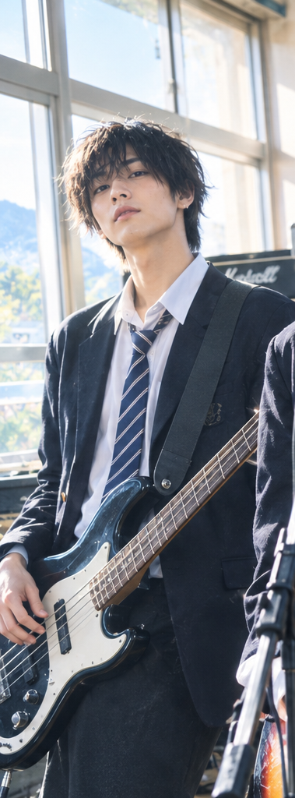
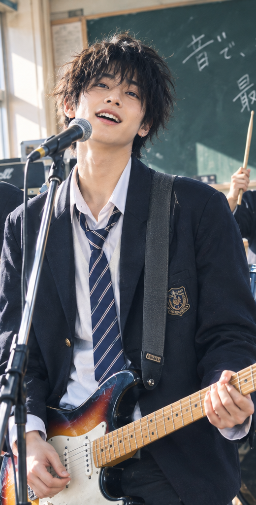
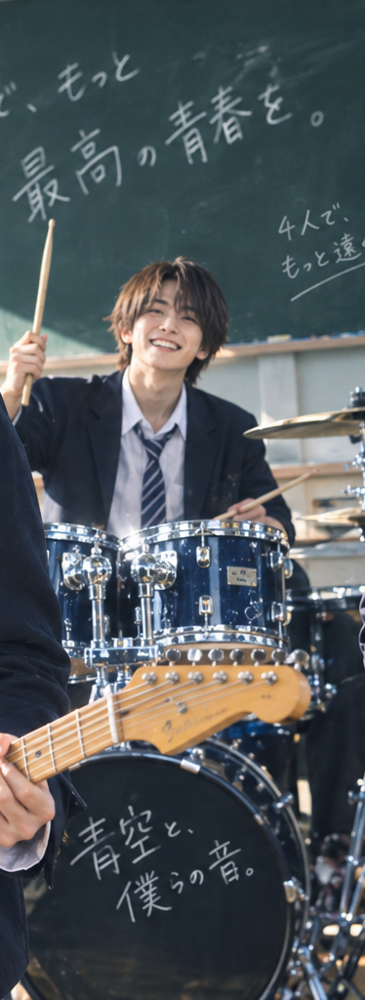
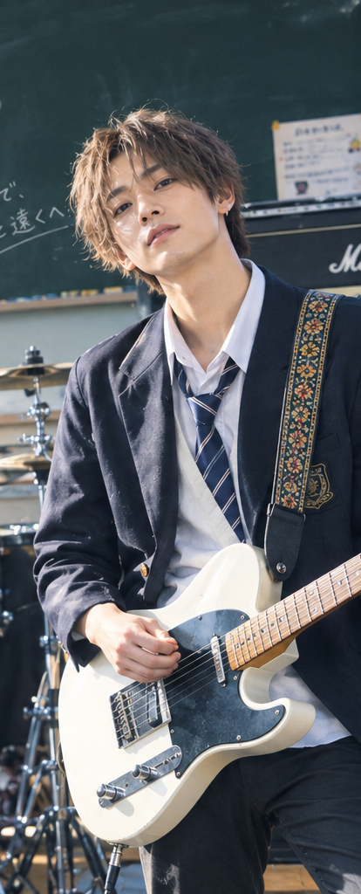

01 · BASS
阿澤
低音裡的定心丸，習慣用節拍把大家帶回同一個地方。
LIVE TOUR 2026 · TAIWAN
01 — OUR STORY
四個在放學後留下來的人，從一首沒寫完的歌開始。青春底片把日常的失落、勇氣和閃閃發亮的瞬間，收進一段段旋律裡。
現在，我們想把這些歌帶上路，也邀請你成為故事的一部分。
認識一起寫歌的人
02 — THE BAND
在同一首歌裡，找到各自發光的位置。

低音裡的定心丸，習慣用節拍把大家帶回同一個地方。

主唱與詞曲，把沒說出口的心事寫成每個人的副歌。

總是比大家早到，讓每場排練都從最有精神的一拍開始。

安靜的吉他手，總能在最剛好的時候彈出最亮的旋律。
03 — ON THE ROAD
把耳機裡的歌，換成一起合唱的晚上。
巡演首場倒數：載入中
台北流行音樂中心
Legacy Taichung
高雄流行音樂中心
台南文化中心
演出與售票資訊以主辦單位公告為準。
04 — FIRST LISTEN
新曲〈那一天的回聲〉片段試聽。戴上耳機，從第一個音符開始。
試聽示範音訊 · 使用播放器控制播放與音量